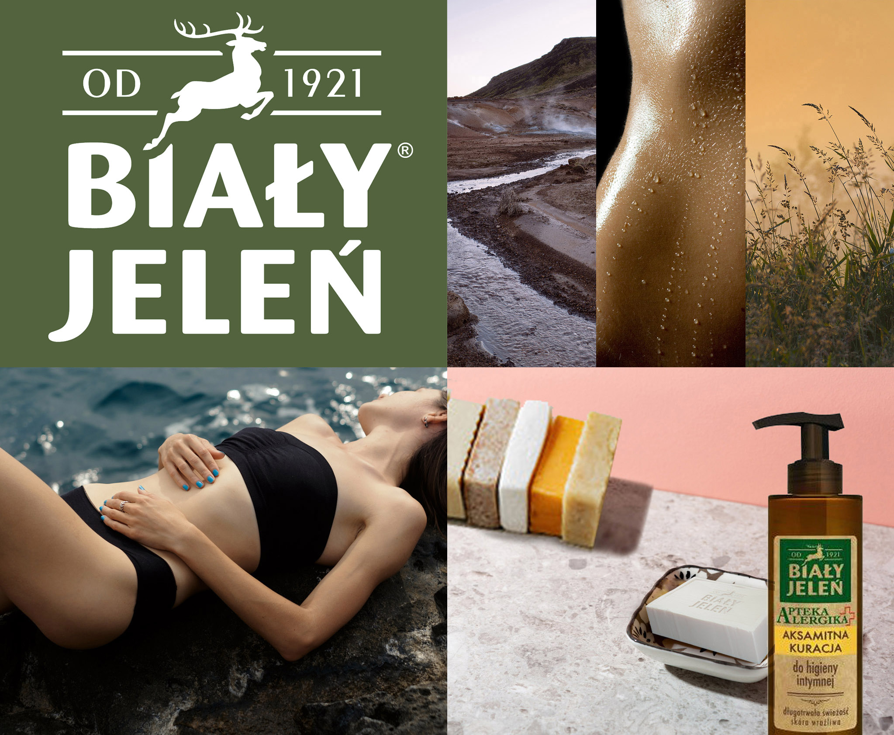
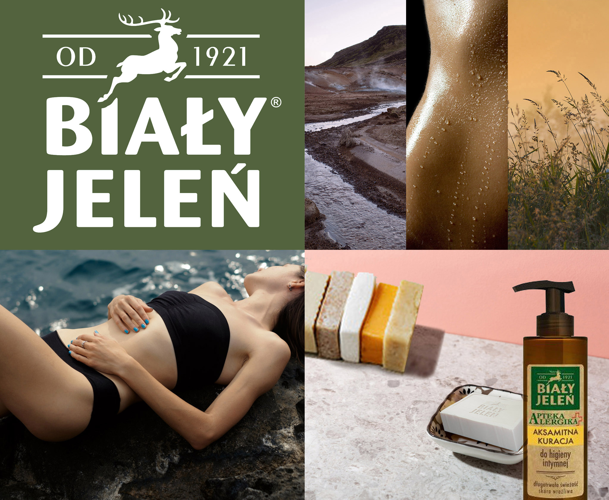
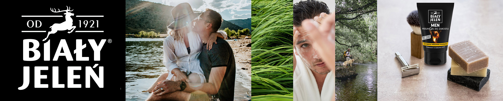

HISTORIA
Od 1921 r. Biały Jeleń jest wiodącą marką w kategorii kosmetyków i środków czystości przeznaczonych w szczególności dla osób o skórze wrażliwej, ze skłonnością do alergii i atopii. Żmudny proces projektowania rozpoczynamy od starannego wyselekcjonowania bezpiecznych składników pielęgnujących. a prawdziwy sekret delikatności i skuteczności naszych produktów tkwi w tradycyjnie warzonym mydle, które cieszy się zaufaniem użytkowników już od 100 lat. Wszystko zaczęło się od mydła... jego legendarna moc i nieprzecenione właściwości wraz z upływem czasu wypełniały kolejne dziedziny codziennego życia. Szare mydło doskonale sprawdza się w procesie pielęgnacji nadwrażliwej skóry. Wyjątkowa receptura wykazuje ścisłą biozgodność z profilem lipidowym ludzkiego naskórka,dzięki czemu podatność wrażliwej skóry na podrażnienia po jego zastosowaniu jest znikoma. Ponadto, tradycyjne szare mydło jest doskonałym środkiem piorącym oraz czyszczącym różnego rodzaju powierzchnie i materiały. Sukces naszego mydła to skuteczność i bezpieczeństwo zweryfikowane poprzez wielopokoleniowe użytkowanie. Wyjątkowa receptura została doceniona również w kręgach medycznych. Nie od dziś wiadomo, że płukanki z udziałem roztworu szarego mydła stanowią idealne dopełnienie rekonwalescencji po różnego rodzaju zabiegach czy urazach. Wychodząc naprzeciw oczekiwaniom nawet najbardziej wymagających użytkowników stopniowo wzbogaciliśmy portfolio marki Biały Jeleń o produkty do mycia i pielęgnacji włosów, twarzy, dłoni, stóp oraz całego ciała. Jesteśmy przekonani, że w naszym asortymencie każdy jest w stanie znaleźć coś odpowiedniego dla siebie.
TRADYCYJNIE, ALE W ZGODZIE Z TRENDAMI

ZERO WASTE
Mydło Biały Jeleń wytwarzamy w konwencji zero waste. Najwyższej jakości surowiec bazowy pozyskujemy jako pozostałość procesów w przemyśle spożywczym. Każda dostawa zostaje poddana wnikliwym analizom jakościowym, a my jako producent, mamy poczucie dobrze spełnionego obowiązku ekologicznego.

UŁATWIONY RECYKLING
Zadbaj o planetę razem z nami! Świadoma segregacja odpadów to symbol troski o wspólne dobro. Opakowania naszych produktów są jednoskładnikowe. Dzięki temu można je wygodnie segregować, umieszczając w odpowiednim pojemniku: papier, szkło, tworzywo sztuczne. Pamiętaj o oderwaniu etykiety – ułatwisz recykling!
RÓWNOWAGA I ROZWÓJ
Stawiamy na zrównoważony rozwój, bo stan atmosfery nie jest nam obojętny. Przyczyniamy się do zmniejszania śladu węglowego zakupując wiodący surowiec produkcyjny od lokalnego dostawcy – zaledwie 25 km drogi od zakładu produkcyjnego. Dzięki temu ograniczamy emisję spalin w transporcie, hamujemy w ten sposób efekt cieplarniany.

BUDUJEMY WIELOPOKOLENIOWE ZAUFANIE
Naszą misją jest tworzenie produktów przeznaczonych dla alergików, osób o nadwrażliwej skórze, a także tych, którzy wykazują objawy atopowego zapalenia skóry. Każdy produkt jest poddawany wnikliwym badaniom i analizom pod kątem skuteczności oraz co najważniejsze tolerancji przez wrażliwą skórę. Seria kosmetyków Codzienna Pielęgnacja stanowi przekrój przez wszystkie kategorie produktowe, od mydeł, płynów do kąpieli i pod prysznic, po kosmetyki kremowe, takie jak kremy do twarzy, czy balsamy do ciała. W formulacjach wykorzystujemy najwyższej jakości, przebadane i sprawdzone składniki funkcyjne, które stanowią bezpieczną i skuteczną mieszankę aktywną. Wieloletnie doświadczenie i uważne obserwacje udowadniają przydatność serii Codzienna Pielęgnacja do stosowania przez wszystkich członków rodziny. Gwarantujemy bezpieczną, wielopokoleniową troskę o wrażliwą skórę.
 

TROSKLIWIE W KIERUNKU PIĘKNA
Alergiku, jeśli Twoja skóra nie toleruje zwykłych kosmetyków nie załamuj rąk, Biały Jeleń wyciąga do Ciebie pomocną dłoń! Innowacyjna linia kosmetyczna Apteka Alergika to połączenie nowoczesnych składników aktywnych z łagodnymi substancjami myjącymi i pielęgnującymi. Prawidłowy rytuał dbania o wrażliwą skórę rozpoczyna się od zabiegów oczyszczających. Aksamitne kuracje do mycia włosów, twarzy oraz ciała działają jak aktywna, kremowa piana, która łagodnie otula skórę, dokładnie ją myjąc i nie powodując odczucia dyskomfortu, czy podrażnienia. Sztuczne barwniki i zbędne dodatki omijają szerokim łukiem receptury naszych produktów. w minimalistycznych bursztynowych opakowaniach zamknęliśmy tylko to, co najlepsze dla skóry. Drugi krok w dążeniu do perfekcyjnie wypielęgnowanej skóry stanowią aksamitne kuracje w postaci skoncentrowanych kremów. Cztery niezwykłe produkty pielęgnacyjne troskliwie zaopiekują się wrażliwą skórą. Motyw przewodni całej serii to prezent od matki natury. Pielęgnacja wzbogacona luteiną, bo o niej mowa, jest milowym krokiem w przyszłość pod znakiem młodości. Ten wyjątkowy składnik o niezwykłych zdolnościach redukuje objawy przedwczesnego starzenia skóry indukowanego światłem niebieskim. w czasach, w których praca zdalna na stałe wkroczyła do codzienności narażenie skóry na czynniki wywołujące jej starzenie zostało wzmożone. Ekrany komputerów, smartfonów, czy tabletów nieustannie emitują promieniowanie, które wywiera niekorzystny wpływ na kondycję skóry.


MĘSKA PIELĘGNACJA CZARNO NA BIAŁYM
Jeżeli oczekujesz od swojego ulubionego kosmetyku przyjemnej, energetyzującej nuty zapachowej oraz odpowiednich zdolności myjących to seria Biały Jeleń MEN oprócz tego zaoferuje Ci dużo więcej pozytywnych doznań! Nasze kosmetyki projektujemy z myślą o Tobie i Twojej skórze. Pragniemy dostarczyć jej wszelkich potrzebnych składników odżywczych, by długotrwale zaskakiwała swoją nienaganną kondycją. Przyjemność pielęgnacji czerpiemy z tradycji, dlatego wzbogaciliśmy żele pod prysznic naturalnym mydłem. z myślą o tych, którzy cenią sobie minimalizm, stworzyliśmy także multifunkcyjne produkty 2w1 – żelo-szampony. Lubimy pozytywnie zaskakiwać, dlatego poza szeroką gamą kosmetyków myjących dla mężczyzn, opracowaliśmy recepturę kremu do twarzy i balsamu po goleniu, które wzbogaciliśmy ponadczasowym sokiem z brzozy. Wisienką na torcie kompleksowej pielęgnacji męskiej skóry jest niewątpliwie jedyny w swoim rodzaju PeelinGel do zarostu. Dbanie o brodę jest trendy, a jej pielęgnacja to niełatwe zadanie. Jednak z nami możesz zrobić krok do przodu eliminując problem wrastających włosków bez podrażnień. Podsumowując, jeżeli posiadasz wrażliwą skórę, która łatwo ulega podrażnieniom, a od swojego kosmetyku oczekujesz czegoś więcej niż tylko oczyszczenie, które wynika z jego przeznaczenia, to doskonale trafiłeś. Przejdź zatem dalej i ciesz się długotrwałym, komfortowym poczuciem wypielęgnowanej skóry.